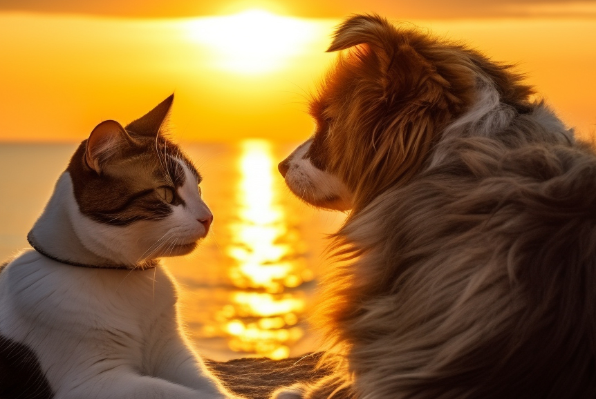
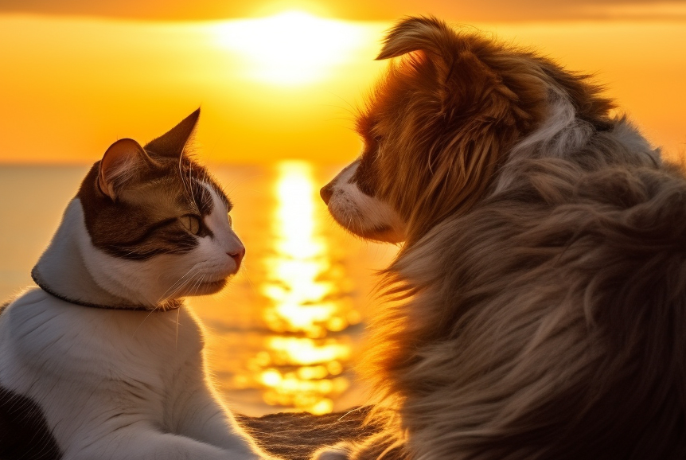

Veja Mais
Nosso Propósito
Na ONG AMIGO FIEL, nosso propósito é salvar, proteger e transformar a vida dos animais em situação de risco. Acreditamos que todos os animais merecem uma segunda chance, e nossa missão é proporcionar a eles o cuidado, a segurança e o amor que precisam para viver com dignidade. Através do resgate, reabilitação e adoção responsável, buscamos não apenas salvar vidas, mas também criar uma sociedade mais consciente e compassiva.
Sobre a ONG
A ONG AMIGO FIEL é uma organização não governamental dedicada à proteção e resgate de animais em situação de risco. Fundada em 2009, nossa missão é proporcionar um futuro melhor para animais abandonados, maltratados ou em perigo. Atuamos com paixão e compromisso, trabalhando para garantir que cada animal resgatado tenha a chance de viver uma vida digna e feliz.
O Que Fazemos
Nossa equipe é composta por voluntários dedicados, veterinários, e amantes dos animais, todos unidos pelo desejo de fazer a diferença. Realizamos resgates de animais que sofrem maus-tratos, abandono ou que se encontram em situações perigosas. Além disso, proporcionamos cuidados médicos, reabilitação e abrigo temporário até que esses animais estejam prontos para encontrar um novo lar amoroso.
Educação e Conscientização
Acreditamos que a educação é fundamental para a criação de uma sociedade mais consciente e respeitosa com os animais. Por isso, promovemos campanhas educativas e palestras em escolas e comunidades para ensinar sobre a importância do respeito, cuidado e responsabilidade com os animais.
Como Ajudar
A ONG AMIGO FIEL depende do apoio da comunidade para continuar nosso trabalho. Existem diversas formas de contribuir: doações, apadrinhamento de animais, voluntariado e adoção são algumas das maneiras pelas quais você pode nos ajudar a salvar vidas. Cada pequena ação faz uma grande diferença na vida desses animais.
Junte-se Á Nós
A luta para proteger e salvar animais é contínua, e precisamos de pessoas como você ao nosso lado. Junte-se a nós nessa missão e ajude a transformar a vida de um animal hoje.
Fotos dos Animais

 


Histórias de Sucesso
A Recuperação de Luna
Luna, uma cachorra de rua, foi encontrada em estado crítico após ter sido atropelada. Nossa equipe a resgatou e, após meses de tratamento intensivo, Luna recuperou-se totalmente. Hoje, ela vive feliz com uma nova família que a ama incondicionalmente, representando o nosso propósito de transformar vidas com amor e cuidado.
O Resgate de Tom
Tom, um gato que vivia abandonado, foi resgatado após sofrer maus-tratos. Ele estava extremamente magro e com diversas feridas. Após receber cuidados veterinários e muito carinho, Tom se transformou em um gato saudável e carinhoso, e agora vive em um lar amoroso. Seu caso é um exemplo de como nosso propósito de resgatar e reabilitar animais faz a diferença.
A Transformação de Bella
Bella foi encontrada amarrada a um poste, desnutrida e com sinais de maus-tratos. Após ser resgatada, ela passou por um processo de reabilitação física e emocional. Hoje, Bella é um exemplo de superação e vive feliz com uma nova família. Sua história reflete nosso compromisso em oferecer uma segunda chance aos animais que mais precisam.
O Reencontro de Rex
Rex, um cãozinho perdido, foi encontrado vagando pelas ruas por nossa equipe. Após divulgarmos seu resgate nas redes sociais, descobrimos que ele tinha uma família que o procurava há meses. O reencontro emocionante foi um dos momentos mais felizes que já presenciamos e reafirma nosso propósito de reunir famílias e seus animais.
O Milagre de Mimi
Mimi, uma gata de 3 patas, foi resgatada após ter sido vítima de um acidente. Sua recuperação foi lenta, mas cheia de determinação. Hoje, Mimi se adaptou à sua nova condição e vive plenamente em um lar onde é muito amada. Sua história é uma prova de que nosso propósito é dar a todos os animais a oportunidade de viver com dignidade, independentemente de suas limitações.
A Nova Vida de Thor
Thor, um pitbull resgatado de um canil clandestino, foi vítima de uma vida inteira de abusos. Após ser resgatado, ele passou por um longo processo de reabilitação e hoje vive em um lar onde é tratado com o respeito e carinho que sempre mereceu. Thor é um exemplo claro de como nosso propósito de resgatar e proteger animais pode transformar vidas.
A Superaçaõ de Nina
Nina foi encontrada em um estado de desnutrição severa, incapaz de caminhar devido à fraqueza. Após cuidados intensivos e muito amor, Nina se recuperou totalmente e encontrou um lar onde é tratada como parte da família. Sua recuperação ilustra nosso propósito de reabilitar animais para que possam viver saudáveis e felizes.
O Resgate de Max e Lola
Max e Lola, dois irmãos cães, foram resgatados juntos de uma situação de extrema negligência. Com paciência e cuidado, ambos recuperaram a saúde e foram adotados juntos, mantendo o vínculo especial entre eles. Essa história mostra como nosso propósito de resgatar e proteger os laços familiares entre animais é essencial.
A Segunda Chance de Lucky
Lucky, um cãozinho idoso e cego, foi abandonado em um parque. Nossa equipe o resgatou e, apesar de suas condições, Lucky demonstrou uma vontade incrível de viver. Hoje, ele é o companheiro fiel de uma senhora que o adotou e cuida dele com todo o amor. Lucky representa nosso propósito de dar a todos os animais, independentemente da idade, uma segunda chance na vida.
A Aventura de Pingo
Pingo, um gatinho encontrado preso em uma árvore alta, foi resgatado por nossos voluntários após um chamado da comunidade. Depois do susto, Pingo foi adotado por uma família que o enche de carinho e o mantém seguro em casa. Sua história reflete nosso propósito de responder prontamente a animais em perigo e garantir que eles tenham um futuro seguro e feliz.
Testemunhos
Maria Silva Gonçalves, Adodante de Luna
"A Luna trouxe uma nova luz para nossa casa. Nunca pensei que poderia amar tanto um animal. Somos eternamente gratos à ONG por nos dar essa chance de tê-la em nossas vidas. Eles realmente vivem seu propósito de transformar vidas."